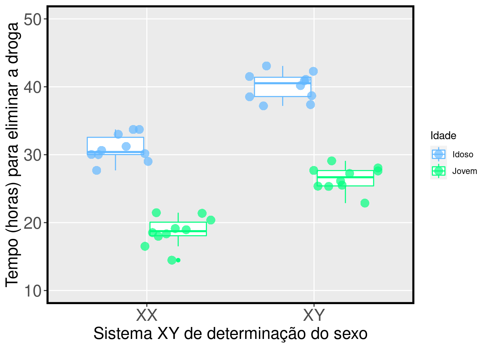

Capítulo 7 Análises de Variância (ANOVA)
7.1 Backgorund da análise
Anova refere-se a uma variedade de delineamentos experimentais nos quais a variável preditora é categórica e a variável resposta é contínua (Gotelli & Ellison 2013). Exemplos desses delineamentos experimentais são: Anova de um fator, Anova de dois fatores, Anova em blocos aleatorizados, Anova de medidas repetidas e Anova split-splot. De forma geral, a Anova é um teste estatístico usado para comparar a média entre grupos amostrados independentementes. Para isso, o teste leva em conta, além das médias dos grupos, a variação dos dados dentro e entre os grupos. Neste capítulo, iremos demonstrar as linhas de comandos para alguns dos principais delineamentos experimentais.
7.1 Premissas da Anova:
- As amostras devem ser independentes;
- As unidades amostrais são selecionadas aleatoriamente;
- Distribuição normal (gaussiana) dos resíduos;
- Homogeneidade da variância.
7.2 ANOVA de um fator
Este teste considera delineamentos experimentais com apenas um fator (ou tratamento) que pode ser composto por três ou mais grupos (ou níveis).
7.2.0.1 Exemplo prático 1 - Anova de um fator
7.2.0.1.1 Explicação dos dados
Neste exemplo, avaliaremos se o adubo X-2020 disponibilizado recentemente no mercado melhora o crescimento dos indivíduos de Coffea arabica como divulgado pela empresa responsável pela venda do produto. Para isso, foi realizado um experimento com indivíduos de C. arabica cultivados em três grupos: i) grupo controle onde os indivíduos não receberam adubação, ii) grupo onde os indivíduos receberam a adição do adubo tradicional mais utilizado pelos produtores de C. arabica, e iii) grupo onde os indivíduos receberam a adição do adubo X-2020.
Pergunta:
O crescimento dos indivíduos de C. arabica é melhorado pela adição do adubo X-2020?
Predições
O crescimento dos indivíduos de C. arabica será maior no grupo que recebeu o adubo X-2020.
Variáveis
- Variáveis preditoras
- Dataframe com as plantas (unidade amostral) nas linhas e o tratamento na coluna.
Checklist
- Verificar se o seu dataframe está com as unidades amostrais nas linhas e variável preditora na coluna.
7.2.1 Análise
Cálculo da Anova de um fator
## IMPORTANDO DADOS
#********************
dados_anova_simples <- ecodados::anova_simples
head(dados_anova_simples) # verificar se o dataframe foi lido corretamente## Crescimento Tratamento
## 1 7.190 Controle
## 2 6.758 Controle
## 3 6.101 Controle
## 4 4.758 Controle
## 5 6.542 Controle
## 6 7.667 Controle# ANALISE ANOVA de um fator
#************************
Modelo_anova <- aov(Crescimento ~ Tratamento, data = dados_anova_simples)
# VERIFICANDO A NORMALIDADE E HOMOGENEIDADE DAS VARIÂNCIAS
#***********************************************************************
# Os gráficos *Residuals vs Fitted* e *Scale-Location* estão relacionados com a homogeneidade da variância. Nestes gráficos, esperamos ver os pontos dispersos no espaço sem padrões em forma de *U* ou funil.
# O gráfico *Normal Q-Q* está relacionado com a distribuição normal dos resíduos. Neste gráfico, esperamos ver os pontos próximos a reta sem padrões em forma de *U* ou *S*.
par(mfrow = c(2, 2), oma = c(0, 0, 2, 0))
plot(Modelo_anova)
## null device
## 1# Se preferir, você pode utilizar testes estatísticos
# Teste de Shapiro-Wilk para normalidade separadamente para cada grupo
shapiro.test(dados_anova_simples$Crescimento[1:12])##
## Shapiro-Wilk normality test
##
## data: dados_anova_simples$Crescimento[1:12]
## W = 0.96731, p-value = 0.8806##
## Shapiro-Wilk normality test
##
## data: dados_anova_simples$Crescimento[13:24]
## W = 0.87324, p-value = 0.07184##
## Shapiro-Wilk normality test
##
## data: dados_anova_simples$Crescimento[25:36]
## W = 0.9294, p-value = 0.3738# Teste de Bartlett para homogeneidade da variância
bartlett.test(Crescimento ~ Tratamento, data = dados_anova_simples)##
## Bartlett test of homogeneity of variances
##
## data: Crescimento by Tratamento
## Bartlett's K-squared = 0.61835, df = 2, p-value = 0.7341## Analysis of Variance Table
##
## Response: Crescimento
## Df Sum Sq Mean Sq F value Pr(>F)
## Tratamento 2 340.32 170.160 77.989 3.124e-13 ***
## Residuals 33 72.00 2.182
## ---
## Signif. codes: 0 '***' 0.001 '**' 0.01 '*' 0.05 '.' 0.1 ' ' 1Percebam que o resultado da Anova (Pr(>F) < 0.001) indica que devemos rejeitar a hipótese nula que não há diferença entre as médias dos grupos. Contudo, os resultados não mostram quais são os grupos que apresentam diferenças. Para isso, temos que realizar testes de comparações múltiplas post-hoc para detectar os grupos que apresentam diferenças significativas entre as médias. Observação Os testes post-hoc só devem ser utilizados quando rejeitamos a hipótese nula (P < 0.05) no teste da Anova.
# Diferenças entre os tratamentos
#***********************************
# Teste de Tuckey's honest significant difference
TukeyHSD(Modelo_anova)## Tukey multiple comparisons of means
## 95% family-wise confidence level
##
## Fit: aov(formula = Crescimento ~ Tratamento, data = dados_anova_simples)
##
## $Tratamento
## diff lwr upr p adj
## Adubo_X-2020-Adubo_Tradicional 0.04991667 -1.429784 1.529617 0.9962299
## Controle-Adubo_Tradicional -6.49716667 -7.976867 -5.017466 0.0000000
## Controle-Adubo_X-2020 -6.54708333 -8.026784 -5.067383 0.0000000##
## Pairwise comparisons using t tests with pooled SD
##
## data: dados_anova_simples$Crescimento and dados_anova_simples$Tratamento
##
## Adubo_Tradicional Adubo_X-2020
## Adubo_X-2020 0.93 -
## Controle 6e-12 6e-12
##
## P value adjustment method: holmVisualizar os resultados em gráfico
# Reordenando a ordem que os grupos irão aparecer no gráfico
dados_anova_simples$Tratamento <- factor(dados_anova_simples$Tratamento ,
levels=c("Controle", "Adubo_Tradicional", "Adubo_X-2020"))
# Gráfico
library(ggplot2)
ggplot(data = dados_anova_simples, aes(x= Tratamento, y= Crescimento, color = Tratamento)) +
labs(x = "Adubação", y = "Crescimento Coffea arabica (cm)", size = 20) +
geom_boxplot(fill=c("steelblue1", "springgreen1", "brown1"), color="black", show.legend = FALSE,
alpha = 0.4) +
geom_jitter(shape = 16, position=position_jitter(0.1), cex = 4, alpha = 0.7) +
scale_color_manual(values = c("steelblue1", "springgreen1", "brown1")) +
scale_y_continuous(limits = c(0, 20), breaks = c(0, 5, 10, 15, 20)) +
geom_text(x = 1, y = 12, label = "ab", color = "black", size = 5) +
geom_text(x = 2, y = 17, label = "a", color = "black", size = 5) +
geom_text(x = 3, y = 17, label = "b", color = "black", size = 5) +
scale_x_discrete(labels=c("Sem adubo","Tradicional","X-2020")) +
theme_bw() +
theme(axis.title.y = element_text(size = 17), axis.title.x = element_text(size = 17)) +
theme(axis.text.y = element_text(size = 17), axis.text.x = element_text(size = 17)) +
theme(panel.grid.major = element_blank(), panel.grid.minor = element_blank(),
panel.border = element_rect(colour = "black", fill=NA, size = 2)) +
theme(legend.position = "none") 
Interpretação dos resultados
Neste exemplo, os indivíduos de C. arabica que receberam adubação (tradicional e X-2020) apresentaram maior crescimento do que os indivíduos que não receberam adubação. Contudo, diferente do que foi divulgado pela empresa, o adubo X-2020 não apresentou melhor desempenho que o adubo tradicional já utilizado pelos produtores.
7.3 ANOVA de dois fatores ou Anova fatorial
Este teste considera delineamentos amostrais com dois fatores (ou tratamento) que podem ser compostos por dois ou mais grupos (ou níveis). Esta análise tem uma vantagem, pois permite avaliar o efeito da interação entre os fatores na variável resposta. Quando a interação está presente, o impacto de um fator depende do nível (ou grupo) do outro fator.
7.3.0.1 Exemplo prático 1 - Anova de dois fatores
7.3.0.1.1 Explicação dos dados
Neste exemplo, avaliaremos se o tempo que o corpo leva para elimiar uma droga utilizada em exames de ressonância magnética está relacionado com o sistema XY de determinação do sexo e/ou com a idade dos pacientes. Para isso, foi realizado um experimento com 40 pacientes distribuídos da seguinte maneira: i) 10 indivíduos XX - jovens, ii) 10 indivíduos XX - idosas, iii) 10 indivíduos XY - jovens, e iv) 10 indivíduos XY - idosos.
Pergunta:
O tempo de eliminação da droga é dependente do sistema XY de determinação do sexo e idade dos pacientes?
Predições
O tempo de eliminação da droga vai ser mais rápido nas pacientes XX e jovens.
Variáveis
- Variáveis preditoras
- Dataframe com os pacientes (unidade amostral) nas linhas e os tratamentos nas colunas.
Checklist
- Verificar se o seu dataframe está com as unidades amostrais nas linhas e as variáveies preditoras nas colunas.
7.3.1 Análise
Cálculo da Anova de dois fator
## IMPORTANDO DADOS
#********************
dados_dois_fatores <- ecodados::anova_dois_fatores
head(dados_dois_fatores) ## Tempo Pessoas Idade
## 1 18.952 XX Jovem
## 2 16.513 XX Jovem
## 3 17.981 XX Jovem
## 4 21.371 XX Jovem
## 5 14.470 XX Jovem
## 6 19.130 XX Jovem# Análise anova de dois fatores
#********************************
# A interação entre os fatores é representada por *
Modelo1 <- aov(Tempo ~ Pessoas * Idade, data = dados_dois_fatores)
# Olhando os resultados
anova(Modelo1)## Analysis of Variance Table
##
## Response: Tempo
## Df Sum Sq Mean Sq F value Pr(>F)
## Pessoas 1 716.72 716.72 178.8538 1.56e-15 ***
## Idade 1 1663.73 1663.73 415.1724 < 2.2e-16 ***
## Pessoas:Idade 1 4.77 4.77 1.1903 0.2825
## Residuals 36 144.26 4.01
## ---
## Signif. codes: 0 '***' 0.001 '**' 0.01 '*' 0.05 '.' 0.1 ' ' 1# Percebam que a interação não apresenta um efeito significativo (P > 0.05). Assim, iremos retirar a interação e verificar, usando LIKELIHOOD RATIO TEST (LRT), se o modelo mais simples é melhor
Modelo2 <- aov(Tempo ~ Pessoas + Idade, data = dados_dois_fatores)
# A hipótese nula é que o modelo mais simples é melhor
# Valores de p < 0.05 rejeita a hipótese nula e o modelo mais complexo é o melhor
# Valores de p > 0.05 não rejeita a hipótese nula e o modelo mais simples é o melhor
library(lmtest)
lrtest(Modelo1, Modelo2)## Likelihood ratio test
##
## Model 1: Tempo ~ Pessoas * Idade
## Model 2: Tempo ~ Pessoas + Idade
## #Df LogLik Df Chisq Pr(>Chisq)
## 1 5 -82.413
## 2 4 -83.063 -1 1.3012 0.254# VERIFICANDO A NORMALIDADE E HOMOGENEIDADE DAS VARIÂNCIAS
#***********************************************************************
# Esta função mostra os resultados para multicolinearidade (a), dois gráficos avaliando a normalidade dos resíduos (b e c), e um gráfico para a homogeneidade dos resíduos (d).
library(sjPlot)
plot_grid(plot_model(Modelo2, type = "diag"))
## Analysis of Variance Table
##
## Response: Tempo
## Df Sum Sq Mean Sq F value Pr(>F)
## Pessoas 1 716.72 716.72 177.94 1.041e-15 ***
## Idade 1 1663.73 1663.73 413.05 < 2.2e-16 ***
## Residuals 37 149.03 4.03
## ---
## Signif. codes: 0 '***' 0.001 '**' 0.01 '*' 0.05 '.' 0.1 ' ' 1Percebam que o resultado da Anova (Pr(>F) < 0.001) indica que devemos rejeitar a hipótese nula que não há diferença entre as médias dos sistema XY e idade dos pacientes. Neste caso, não precisamos realizar testes de comparações múltiplas post-hoc porque os fatores apresentam apenas dois níveis. Contudo, se no seu delineamento experimental um dos fatores apresentar três ou mais níveis, você deverá utilizar os testes de comparações post-hoc para determinar as diferenças entre os grupos. Observação Os testes post-hoc só devem ser utilizados quando rejeitamos a hipótese nula (P < 0.05) no teste da Anova.
# Diferenças entre os tratamentos
#***********************************
# Teste de Tuckey's honest significant difference
TukeyHSD(Modelo2)## Tukey multiple comparisons of means
## 95% family-wise confidence level
##
## Fit: aov(formula = Tempo ~ Pessoas + Idade, data = dados_dois_fatores)
##
## $Pessoas
## diff lwr upr p adj
## XY-XX 8.46595 7.180008 9.751892 0
##
## $Idade
## diff lwr upr p adj
## Jovem-Idoso -12.89855 -14.18449 -11.61261 0Visualizar os resultados em gráfico
# Gráfico
library(ggplot2)
ggplot(data = dados_dois_fatores, aes(y= Tempo, x= Pessoas, color = Idade)) +
geom_boxplot() +
labs(x = "Sistema XY de determinação do sexo", y = "Tempo (horas) para eliminar a droga",
size = 20) +
geom_jitter(shape = 16, position=position_jitterdodge(), cex = 4, alpha = 0.7) +
scale_color_manual(values = c("steelblue1", "springgreen1")) +
scale_y_continuous(limits = c(10, 50), breaks = c(10, 20, 30, 40, 50)) +
theme(axis.title.y = element_text(size = 17), axis.title.x = element_text(size = 17)) +
theme(axis.text.y = element_text(size = 17), axis.text.x = element_text(size = 17)) +
theme(panel.grid.minor = element_blank(),
panel.border = element_rect(colour = "black", fill=NA, size = 2)) 
Interpretação dos resultados
Neste exemplo, O sitesma XY de determinação do sexo e a idade dos pacientes tem um efeito no tempo de eliminação da droga do organismo. Os pacientes XX e jovens apresentam eliminação mais rápida da droga do que pacientes XY e idosos.
7.4 ANOVA em blocos aleatorizados
No delineamento experimental com blocos aleatorizados, cada fator é agrupado em blocos, com réplicas de cada nível do fator representado em cada bloco (Gotelli & Elisson 2013). O bloco é uma área ou período de tempo dentro do qual as condições ambientais são relativamente homogêneas. O objetivo do uso dos blocos é controlar fontes de variações indesejadas na variável dependente que não são de interesse do pesquisador. Desta maneira, podemos retirar dos resíduos, os efeitos das variações indesejadas que não do nosso interesse, e testar com maior poder estatístico os efeitos dos tratamentos de interesse. Importante, os blocos devem ser arranjados de forma que as condições ambientais sejam mais similares dentro dos blocos do que entre os blocos.
7.4.0.1 Exemplo prático 1 - Anova em blocos aleatorizados
7.4.0.1.1 Explicação dos dados
Neste exemplo, avaliaremos a riqueza de espécies de anuros amostradas em poças artificiais instaladas a diferentes distâncias de seis fragmentos florestais no sudeste do Brasil (da Silva et al. 2020). Os fragmentos florestais apresentam diferenças entre si que não do interesse do pesquisador. Por isso, eles foram incluídos como blocos nas análises. As poças artificiais foram instaladas em todos os fragmentos florestais basedo no seguinte delineamento experimental (da Silva et al. 2012): i) 4 poças no interior do fragmento a 100m de distância da borda do fragmento; ii) 4 poças no interior no fragmento a 50m de distância da borda do fragmento; iii) 4 poças no na borda do fragmento; iv) 4 poças na matriz de pastagem a 50m de distância da borda do fragmento; e v) 4 poças na matriz de pastagem a 100m de distância da borda do fragmento. Percebam que todos os tratamentos foram instalados em todos os blocos.
Pergunta:
A distância da poça artifical ao fragmento florestal influência a riqueza de espécies anuros?
Predições
Poças na borda do fragmento florestal apresentarão maior riqueza de espécies do que poças distantes da borda.
Variáveis
- Variáveis preditoras
- Dataframe com as poças (unidade amostral) nas linhas e o tratamento e bloco nas colunas.
Checklist
- Verificar se o seu dataframe está com as unidades amostrais nas linhas e variáveis preditoras nas colunas.
7.4.1 Análise
Cálculo da Anova em blocos aleatorizados
## IMPORTANDO DADOS
#********************
dados_bloco <- ecodados::anova_bloco
str(dados_bloco) # verificar se o dataframe foi lido corretamente## 'data.frame': 30 obs. of 3 variables:
## $ Riqueza: int 90 95 107 92 89 92 81 92 93 80 ...
## $ Blocos : chr "A" "A" "A" "A" ...
## $ Pocas : chr "Int-50m" "Int-100m" "Borda" "Mat-50m" ...# ANALISE ANOVA em blocos aleatorizados
#****************************************
# Há duas maneiras para incluir os efeitos dos blocos
model_bloco1 <- aov(Riqueza ~ Pocas + Blocos, data = dados_bloco)
model_bloco2 <- aov(Riqueza ~ Pocas + Error(Blocos), data = dados_bloco)
# Percebam que as duas formas apresentam os mesmo resultados para o efeito da distância das poças que é o fator de interesse no estudo. Lembre-se que nos delineamentos experimentais em bloco, o pesquisador não está interessado no efeito do bloco, mas sim controlar a variação associada a ele.
anova(model_bloco1)## Analysis of Variance Table
##
## Response: Riqueza
## Df Sum Sq Mean Sq F value Pr(>F)
## Pocas 4 1504.5 376.12 2.9071 0.0478 *
## Blocos 5 1089.0 217.79 1.6834 0.1846
## Residuals 20 2587.5 129.38
## ---
## Signif. codes: 0 '***' 0.001 '**' 0.01 '*' 0.05 '.' 0.1 ' ' 1##
## Error: Blocos
## Df Sum Sq Mean Sq F value Pr(>F)
## Residuals 5 1089 217.8
##
## Error: Within
## Df Sum Sq Mean Sq F value Pr(>F)
## Pocas 4 1504 376.1 2.907 0.0478 *
## Residuals 20 2588 129.4
## ---
## Signif. codes: 0 '***' 0.001 '**' 0.01 '*' 0.05 '.' 0.1 ' ' 1# O que não pode acontecer é ignorar o efeito do bloco que é incorporado pelos resíduos quando não informado no modelo. Veja abaixo a forma errada de analisar delineamento experimental com blocos.
modelo_errado <- aov(Riqueza ~ Pocas, data = dados_bloco)
anova(modelo_errado)## Analysis of Variance Table
##
## Response: Riqueza
## Df Sum Sq Mean Sq F value Pr(>F)
## Pocas 4 1504.5 376.12 2.5576 0.06359 .
## Residuals 25 3676.5 147.06
## ---
## Signif. codes: 0 '***' 0.001 '**' 0.01 '*' 0.05 '.' 0.1 ' ' 1# VERIFICANDO A NORMALIDADE E HOMOGENEIDADE DAS VARIÂNCIAS
#***********************************************************************
# Os gráficos *Residuals vs Fitted* e *Scale-Location* estão relacionados com a homogeneidade da variância. Nestes gráficos, esperamos ver os pontos dispersos no espaço sem padrões em forma de *U* ou funil.
# O gráfico *Normal Q-Q* está relacionado com a distribuição normal dos resíduos. Neste gráfico, esperamos ver os pontos próximos a reta sem padrões em forma de *U* ou *S*.
par(mfrow = c(2, 2), oma = c(0, 0, 2, 0))
plot(model_bloco1)
## null device
## 1Percebam que o resultado da Anova (Pr(>F) < 0.001) indica que devemos rejeitar a hipótese nula que não há diferença entre as médias dos grupos. Contudo, os resultados não mostram quais são os grupos que apresentam diferenças. Para isso, temos que realizar testes de comparações múltiplas post-hoc para detectar os grupos que apresentam diferenças significativas entre as médias. Observação Os testes post-hoc só devem ser utilizados quando rejeitamos a hipótese nula (P < 0.05) no teste da Anova.
# Diferenças entre os tratamentos
#***********************************
# Teste de Tuckey's honest significant difference
library(lsmeans)
pairs(lsmeans(model_bloco1, "Pocas"), adjust = "tukey")## contrast estimate SE df t.ratio p.value
## Borda - (Int-100m) 16.000 6.57 20 2.436 0.1463
## Borda - (Int-50m) 19.833 6.57 20 3.020 0.0472
## Borda - (Mat-100m) 15.833 6.57 20 2.411 0.1531
## Borda - (Mat-50m) 8.167 6.57 20 1.244 0.7269
## (Int-100m) - (Int-50m) 3.833 6.57 20 0.584 0.9760
## (Int-100m) - (Mat-100m) -0.167 6.57 20 -0.025 1.0000
## (Int-100m) - (Mat-50m) -7.833 6.57 20 -1.193 0.7553
## (Int-50m) - (Mat-100m) -4.000 6.57 20 -0.609 0.9720
## (Int-50m) - (Mat-50m) -11.667 6.57 20 -1.777 0.4135
## (Mat-100m) - (Mat-50m) -7.667 6.57 20 -1.167 0.7692
##
## Results are averaged over the levels of: Blocos
## P value adjustment: tukey method for comparing a family of 5 estimatesVisualizar os resultados em gráfico
# Reordenando a ordem que os grupos irão aparecer no gráfico
dados_bloco$Pocas <- factor(dados_bloco$Pocas,
levels=c("Int-100m", "Int-50m", "Borda", "Mat-50m", "Mat-100m"))
# Gráfico
library(ggplot2)
ggplot(data = dados_bloco, aes(x= Pocas, y= Riqueza)) +
labs(x = "Poças artificiais", y = "Riqueza de espécies de anuros", size = 20) +
geom_boxplot(color="black", show.legend = FALSE,
alpha = 0.4) +
geom_jitter(shape = 16, position=position_jitter(0.1), cex = 5, alpha = 0.7) +
scale_x_discrete(labels=c("-100m","-50m","Borda", "50m", "100m")) +
theme(axis.title.y = element_text(size = 17), axis.title.x = element_text(size = 17)) +
theme(axis.text.y = element_text(size = 17), axis.text.x = element_text(size = 17)) +
theme(panel.border = element_rect(colour = "black", fill=NA, size = 2)) 
Interpretação dos resultados
Neste exemplo, rejeitamos a hipótese nula que a distância da poças artificiais até as bordas dos fragmentos florestais não influência a riqueza de espécies de anuros. As poças artificiais instaladas nas bordas dos fragmentos florestais apresentaram maior riqueza de espécies do que as poças distantes.
7.5 Análise de covariância (ANCOVA)
A ANCOVA pode ser compreendida como uma extensão da Anova com a adição de variável contínua (covariável) medida em todas as unidades amostrais (Gotelli & Ellison 2013). A ideia é que a covariável também afete os valores da variável resposta. Não incluir a covariável irá fazer com que a variação não explicada pelo modelo concentre-se nos resíduos. Incluindo a covariável, o tamanho do resíduo é menor, e o teste para avaliar as diferenças nos tratamentos terá mais poder estatístico.
7.5.0.1 Exemplo prático 1 - ANCOVA
7.5.0.1.1 Explicação dos dados
Neste exemplo, avaliaremos o efeito da herbivoria na biomassa dos frutos de uma espécie de árvore na Mata Atlântica. O delineamento experimental permitiu que alguns indivíduos sofressem herbivoria e outros não. Os pesquisadores também mediram o tamanho da raiz dos indíviduos para inseri-la como uma covariável no modelo.
Pergunta:
A herbivoria diminiu a biomssa dos frutos?
Predições
Os indivíduos que sofreram herbivoria irão produzir frutos com menor biomassa do que os indivíduos sem herbivoria.
Variáveis
- Variáveis preditoras
- Dataframe com as indivíduos da espéci de planta (unidade amostral) nas linhas e o tratamento e a covariável nas colunas.
Checklist
- Verificar se o seu dataframe está com as unidades amostrais nas linhas e variáveis preditoras nas colunas.
7.5.1 Análise
Cálculo da ANCOVA
## IMPORTANDO DADOS
#********************
dados_ancova <- ecodados::ancova
str(dados_ancova) # verificar se o dataframe foi lido corretamente## 'data.frame': 40 obs. of 3 variables:
## $ Raiz : num 6.22 6.49 4.92 5.13 5.42 ...
## $ Biomassa : num 59.8 61 14.7 19.3 34.2 ...
## $ Herbivoria: chr "Sem_herb" "Sem_herb" "Sem_herb" "Sem_herb" ...# ANALISE ANCOVA
#****************************************
modelo_ancova <- lm(Biomassa ~ Herbivoria + Raiz, data = dados_ancova)
# VERIFICANDO A NORMALIDADE E HOMOGENEIDADE DAS VARIÂNCIAS
#***********************************************************************
# Esta função mostra os resultados para multicolinearidade (a), dois gráficos avaliando a normalidade dos resíduos (b e c), e um gráfico para a homogeneidade dos resíduos (d).
library(sjPlot)
plot_grid(plot_model(modelo_ancova, type = "diag"))## Analysis of Variance Table
##
## Response: Biomassa
## Df Sum Sq Mean Sq F value Pr(>F)
## Herbivoria 1 1941.9 1941.9 33.759 1.135e-06 ***
## Raiz 1 17434.1 17434.1 303.075 < 2.2e-16 ***
## Residuals 37 2128.4 57.5
## ---
## Signif. codes: 0 '***' 0.001 '**' 0.01 '*' 0.05 '.' 0.1 ' ' 1Percebam que o resultado da ANCOVA (Pr(>F) < 0.001) indica que tanto a herbivoria como a o tamanho da raiz (covariável) tem efeitos significativos na biomassa dos frutos.
Visualizar os resultados em gráfico
# Gráfico
library(ggplot2)
ggplot(data = dados_ancova, aes(x= Raiz, y= Biomassa, fill = Herbivoria)) +
labs(x = "Tamanho da raiz (cm)", y = "Biomassa dos frutos (g)", size = 20) +
geom_point(size = 15, shape = 21) +
theme(axis.title.y = element_text(size = 17), axis.title.x = element_text(size = 17)) +
theme(axis.text.y = element_text(size = 17), axis.text.x = element_text(size = 17)) +
theme(panel.grid.major = element_blank(),
panel.border = element_rect(colour = "black", fill=NA, size = 2)) +
theme(legend.position="bottom") +
scale_fill_discrete(name = "Herbivoria", labels = c("Com herbivoria", "Sem herbivoria")) +
geom_smooth(aes(color=Herbivoria), method="lm", show.legend = FALSE)
Interpretação dos resultados
Neste exemplo, o tamanho da raiz (covariável) tem uma relação positiva com a biomassa dos frutos. Quanto maior o tamanho da raiz, maior a biomassa dos frutos. Usando a ANCOVA e controlando o efeito da covariável, percebemos que a herbivoria também afeta a biomassa dos frutos. Os indivíduos que não sofreram herbivoria produziram frutos com maior biomassa do que os indivíduos com herbivoria.
7.5.2 Para se aprofundar
- Recomendamos aos interessados os livros: i) Zar (2010) Biostatiscal analysis; ii) Gotelli & Ellison (2013) A primer of ecological statistics; e iii) Quinn & Keough (2002) Experimental design and data analysis for biologists.